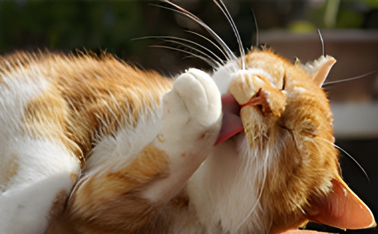

Cat Care
To keep your cat happy, healthy, and safe, there are a few important things they need every day:
- Balanced food and fresh water
- Clean litter box
- Regular vet checkups
- Exercise and play
- Safe places to sleep and hide
- Grooming and a safe environment
- Love, attention, and space
Overall, cats need proper care, a safe environment, and lots of love to stay happy and healthy. Taking care of their physical and emotional needs helps them live a long and comfortable life.
.jpg)
Cat Breeds
To choose the right cat breed, it’s important to consider their personality, appearance, and care needs:
- Make sure their exercise, health, and living needs fit your lifestyle and home.
- Think about the cat’s size, coat type, and how much grooming they will need.
- Consider whether you want a playful, energetic cat or a calm, affectionate one.
Choosing a breed that suits your lifestyle can help create a happy and comfortable relationship between you and your cat.

Cat Moods
Cats can experience a wide range of moods, including happiness, excitement, curiosity, fear, stress, and irritation. They often communicate how they feel through their body language, facial expressions, tail movements, and sounds such as purring, meowing, hissing, or growling. A relaxed cat may have soft eyes, a loose body, and an upright or gently moving tail, while a frightened or angry cat may flatten their ears, puff up their fur, or hide. It’s important to pay attention to these signs and give your cat space when they seem stressed or upset. Understanding your cat’s moods can help you build trust, respond to their needs, and create a safe and comfortable environment for them.